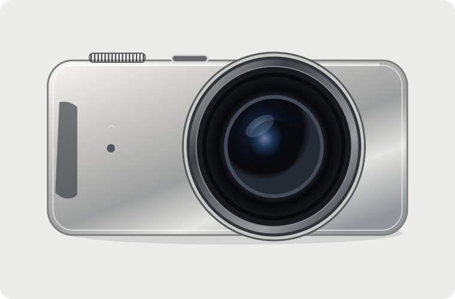
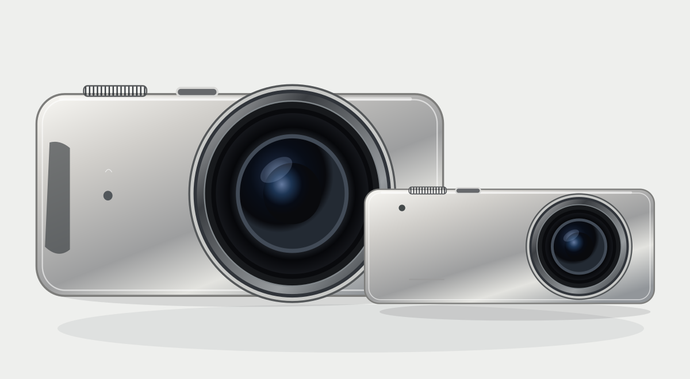
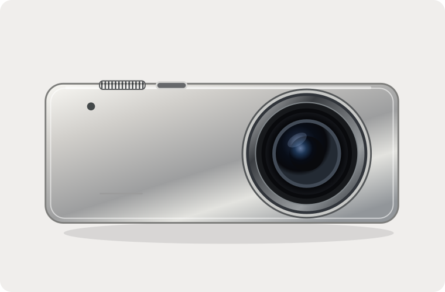
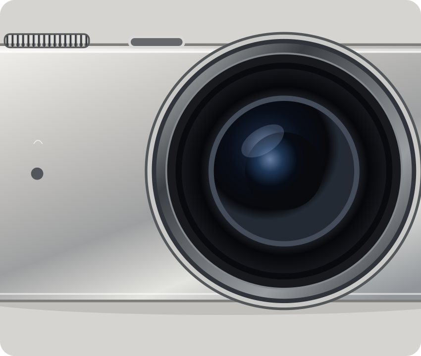

THE CREATOR'S CAMERA
iSee
More control. More creativity.
Concept target from $799

A substantial, precision-built camera with tactile controls and a larger imaging system for photographers who love the process.
Explore iSeeMeet the camera that brings your attention back to the moment. Thoughtfully designed. Brilliantly focused. Entirely yours.

Two cameras. A whole new perspective.
The idea
No notifications. No endless apps. Just you, the light, and what matters.
Meet the family
One camera for effortless everyday moments. Another for the details that deserve your full creative attention.
THE CREATOR'S CAMERA
More control. More creativity.
Concept target from $799

A substantial, precision-built camera with tactile controls and a larger imaging system for photographers who love the process.
Explore iSeeTHE EVERYDAY CAMERA
Big possibilities. In your pocket.
Concept target from $399

Small enough to go with you. Thoughtful controls, effortless capture, and colors that feel a little more like you.
Explore finishesAn intentional object
Soft curves meet precision metal. Every surface is considered, every control belongs. Two silhouettes, one unmistakable family.
Finish selector previews color direction and mood, not a finished manufacturing render. Bright colors are envisioned for Air; neutral finishes for standard iSee.

Made to hold. Made to last.Focus Intelligence
Choose your subject. Tell iSee how you see the scene. Let intelligent tools take care of the distractions.
Choose how you'd like the background to look. Clean mode illustrates an AI-assisted edit prepared after capture.
Natural: preserve the scene and save an untouched original.
Meet cameraOS
Designed around the viewfinder. Customize what's visible, put favorite controls where you want them, and stay in the moment.
Try a couple of cameraOS display preferences. The live interface updates as you switch.
cameraOS is a proposed operating system. This is a working interface mockup, not a camera firmware build.
A thoughtful workflow
Quick edits when you need them. Deep creative work when you want it. iSee keeps your original and edited versions organized for the journey.
Frame the shot using iSee's focused controls.
Crop, color-correct, and adjust on cameraOS.
Connect to Mac for advanced processing and editing.
Find your iSee
Two approaches to one simple idea: a dedicated camera you love to use.
| Feature | iSee AirEveryday | iSeeCreator |
|---|---|---|
| Concept price | $399–$499 | $799–$999 |
| Design | Thin, pocketable | Larger, tactile controls |
| Lens | Integrated fixed lens | Advanced fixed lens |
| Imaging | Compact sensor concept | Larger sensor concept |
| Controls | Touch + essential buttons | Touch + customizable dials |
| Focus Intelligence | Core modes | Core + advanced options |
| Editing | Quick Edit + Mac | Quick Edit + Mac |
| Finishes | Expressive colors | Professional neutrals |
Targets are conceptual and have not been validated by manufacturing cost analysis. The future iSee Pro—with potential interchangeable lenses—is not part of the launch lineup.
A camera designed for the beauty of paying attention.
Back to the beginning